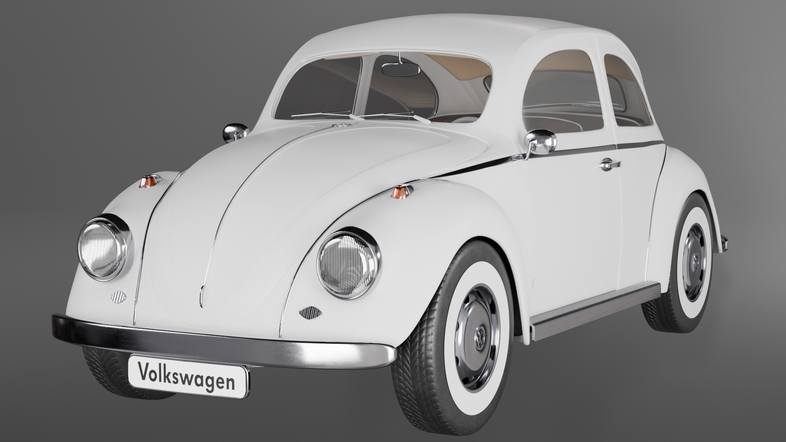

If you want to explore the model i more images, click here.
- Model Name:1968 Volkswagen Beetle
- Type:High‑detail 3D car model
- Software Used:Blender (version 4.4)
- Modeling Techniques:Polygon modeling, Subdivision Surface, Mirror modifier, Edge loops, Separation of objects, Boolean operations
- Textures:PBR shader setup; procedural & image textures
- UV Mapping:Custom UV unwrap for accurate texturing
- Interior:Detailed cabin geometry (seats, dashboard, steering wheel)
- Engine:Fully modelled internal engine components
- Polygons:1,237,933
- Vertices:1,263,886
- Animations:Opening doors, Hood, and Trunk
- File-formats:Blender (.blend), FBX (.fbx), Wavefront (.obj), STL (.stl), glTF (.glb)